overview
numerics-triangle
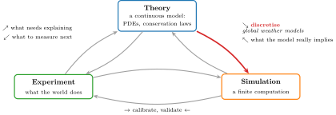
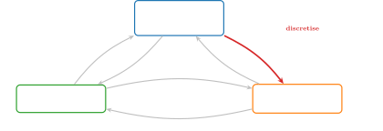
numerics-triangle: Experiment, theory and simulation, with an arrow each way between every two of them; the arrow from theory to simulation, discretisation, is highlighted.
light: PDF · SVG · PNG 150 · 300 · 600


dark: PDF · SVG · PNG 150 · 300 · 600


two-directions
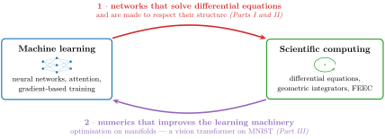
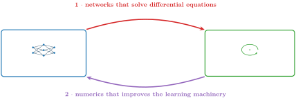
two-directions: Machine learning and scientific computing: networks that solve differential equations and respect their structure, and numerics on manifolds that improves the learning machinery.
light: PDF · SVG · PNG 150 · 300 · 600


dark: PDF · SVG · PNG 150 · 300 · 600


solution-vs-structure
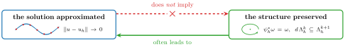
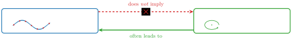
solution-vs-structure: Approximating the solution well does not imply preserving the structure, while preserving the structure often leads to a good approximation of the solution.
light: PDF · SVG · PNG 150 · 300 · 600


dark: PDF · SVG · PNG 150 · 300 · 600


derived-vs-learned
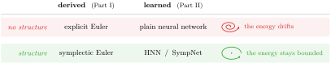
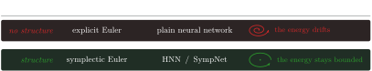
derived-vs-learned: Derived and learned methods without and with structure: explicit Euler and a plain network let the energy drift, symplectic Euler and HNNs or SympNets keep it bounded.
light: PDF · SVG · PNG 150 · 300 · 600


dark: PDF · SVG · PNG 150 · 300 · 600


mathematical-landscape
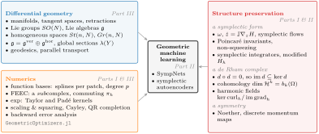
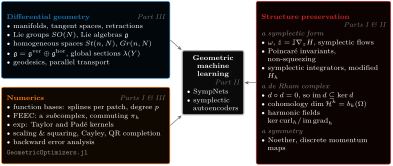
mathematical-landscape: The mathematics of geometric machine learning: differential geometry, numerics and structure preservation feeding SympNets and symplectic autoencoders.
light: PDF · SVG · PNG 150 · 300 · 600


dark: PDF · SVG · PNG 150 · 300 · 600


juliagni-ecosystem
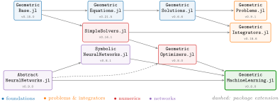
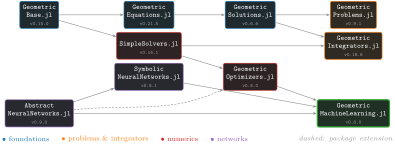
juliagni-ecosystem: The main registered JuliaGNI packages as a dependency graph, from GeometricBase.jl to GeometricMachineLearning.jl, with their latest versions as of 5 October 2026.